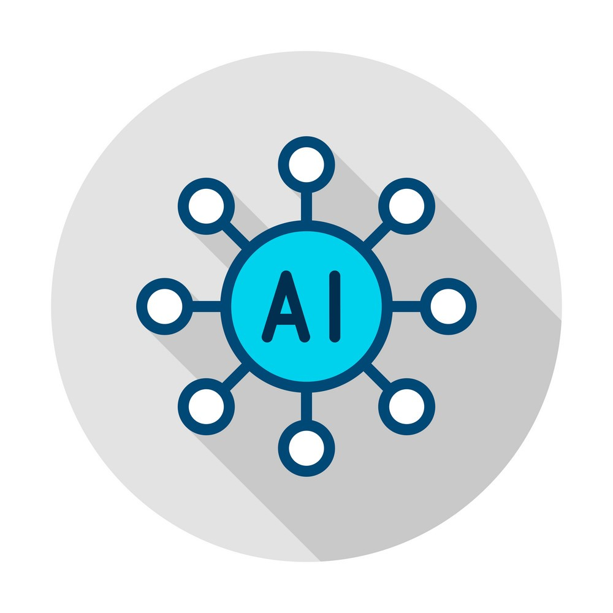

Software Development
🚀 My journey through education, work, and personal exploration has exposed me to a diverse
range of programming languages. From classroom learning to hands-on projects, I've become skilled in languages
such as Java, C++, and SQL.
📱 I've also ventured into the realm of Mobile App Development using tools like React
Native, Typescript, and JavaScript.
🌐 On the web front, I've tinkered with HTML, CSS, JavaScript, and harnessed
the power of React.
💡 Beyond coding, I've embraced essential concepts like DBMS and REST Services,
solidifying my foundation in the tech ecosystem.

Artifical Intelligence
🔍 My fascination with Artificial Intelligence led me to complete a
comprehensive 120-hour Deep Learning Specialization on Coursera. Guided by the famous Andrew Ng, this
transformative experience delved into machine learning and deep learning concepts in great detail. Also, it
helped me to gain hands-on experience with these concepts through lab assignments.
🤖 Additionally, I engaged in Udemy's "Artificial Intelligence A-Z™" course, enhancing
my AI knowledge.
📚 Connecting Theory and Practice: As a Rookie Researcher in the Sensor Research Lab, I collaborated with Dr.
Mehmet Parlak on a project focused on smart contract modeling using Natural Language Processing (NLP). My
contributions included literature reviews and practical applications, igniting my passion for applying AI to
real-world scenarios.
These journeys supported by hands-on experiences highlight
my dedication to pushing the boundaries of AI and its transformative influence.